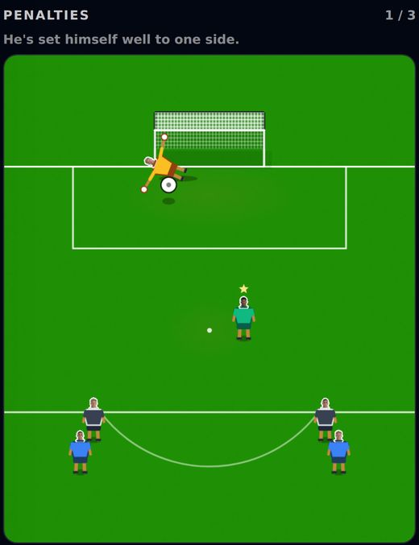
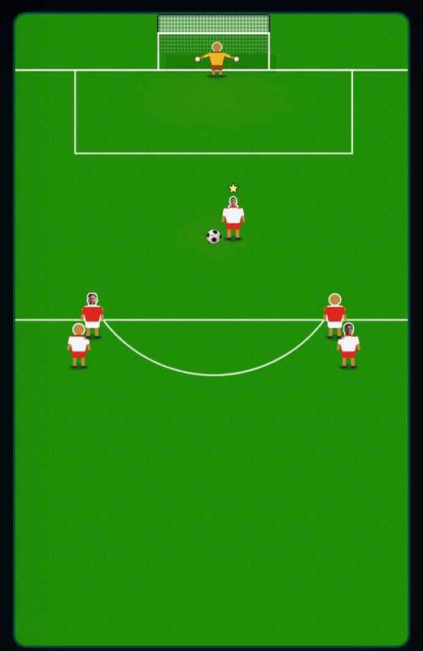
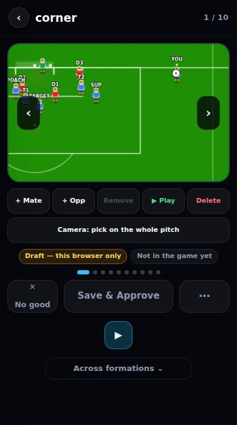
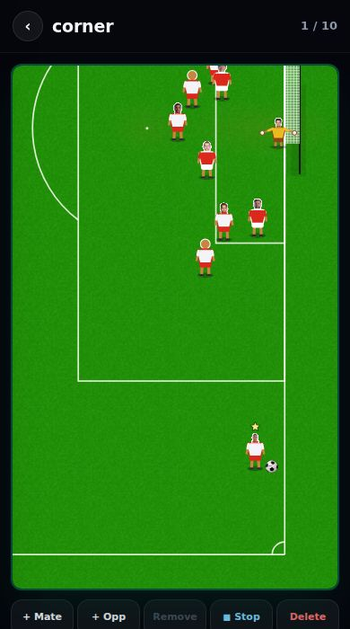

Harry's patch notes
The headline is the guard: why the trial, training and five-a-side felt different, and what now stops it happening again. After that, every change as the problem, why it happened, and the fix.
The guard: the game can't quietly split into copies again
2. The guard. An automatic check reads all the code before every deploy and stops the site going live if anyone adds a new copy.
A fix to the real match missed every one of these.
4 copies left, and the list can only shrink.
What the guard stops
- A new copy of the matchHowever it's hidden: renamed, re-routed or loaded late.
- A screen moving its own ballAny screen with its own animation has to be on a list, and the list can only shrink.
- A test page missing something a career hasFor example real squads, weather or team understanding.
When it stops a deploy, the build log says exactly what to fix. This is what it looks like in Vercel's build log:
ONE ENGINE GUARD (23.9s)
4 copies of the match still to port:
- five-a-side (its own game, your call)
- bicycle-kick lab · live-attack lab · Mikey's physics page
1 PROBLEM — the build stops here:
✗ components/star/ZzDemoCopy.tsx runs its own copy of the match.
Build it on EnginePlay instead.
Real output from this round. I planted a fake copy for ten seconds to show what a failure looks like, then deleted it. With nothing planted, it ends in a green tick and the build carries on.
What this means for you
- When you playThe trial, training, the gallery and the highlights feel like the real game, because they are the real game.
- When you want a screen to play differentlyAsk for it by name ("trial keeper guesses better"). It becomes a named dial on a list, not a copy, and the build passes.
- If a deploy fails with "ONE ENGINE GUARD"Players see nothing wrong: the live site keeps the last good version. Paste the message into Claude; it names the file and the fix.
- If Claude asks to edit the guardSay yes only if you asked for that change. That question is the lock doing its job.
- The costEach deploy takes about 20 seconds longer.
Three layers, earliest first
Can it quietly stop working?
- It checks itself. Ten fake copies are hidden in a test folder. If the guard ever stops seeing them, the build fails with "GUARD IS BLIND".
- It can't be turned off quietly. Removing it from the build, or editing its list, asks you first (layer 1) and shows up in the pull request.
- The list only shrinks. A limit on the number of copies fails the build if anyone adds one to the list.
- One gap only you can close: Vercel's Build Command must be the default (
npm run build). If someone set it tonext buildin the Vercel settings, the guard is skipped. Worth a 10-second look.
Check these
Problems fixed
Each one: what you'd have noticed, why it happened, and what changed.
The trial's penalties and free kicks didn't play like a match


Penalties in the corner always went in
Corner: always in. Middle: always saved.
A guess you can beat, not a statue.
400 penalties per row on the real engine, measured, not played by hand.
Training kicked differently from a match
Bodies overlapping.
The same wall you face in a career.
Drawn to scale: 1m = 30px.
Five-a-side's arrow and drag didn't match the match
Orange: the arrow. Dotted: where the ball went. The gap is made bigger here so you can see it (it was 3.7°).
The ball goes where the arrow points (0.01°).
Worked out from the drag formula at power 55 on a 390px phone, not played.
A gallery corner looked different when you pressed Play



77.4% is the same as a career match on a laptop (worked out). The picture sizes were measured in a browser.
Some teams wore the same two colours, swapped

Bournemouth switch to black shorts. Drawing of the new kits, not a screenshot.
Every pairing of the game's clubs, home and away, checked by the tests.
Behind the scenes
- Every match built its first chance again on every screen redraw, then threw it away. Now it's built once. Nothing about how it plays changes.
Seen in a browser
- Gallery corners, seenIn a real browser at 390px and 1280px: the picture is turned sideways, Play matches it, and you can drag YOU on a sideways corner.
- Trial penalties: seen, worksPlayed all 3 reps on a phone-sized browser. The keeper stood dead centre through every aim, and was mid-dive about a third of a second after the strike.
- Trial free kicks: seen, worksA 5-man wall on every rep, the real arrow and contact screen, and the stage finished cleanly.
- Five-a-side: seen, works, no freezeDrag, arrow, strike, and the match carried on afterwards. The kick went out for a kick-in, so "their team wins the ball" wasn't tested directly.
- Training and a career match: not seenThe test player wasn't signed by a club in time to reach training. The type-check and 166 of 167 tests pass (the one failure is the known one below). Use the checklist.
- No errors on screen or in the consoleAcross onboarding, all three trial stages and the dashboard.
Your questions, answered
Why did the trial, training and five-a-side still say "not the real match engine"?
Because they weren't, yet. Each one ran its own copy of the match, with its own ball, keeper and camera. v0.9 fixed the test screens and put these three on the list to move next. This round moved them: the trial and training are now the real match, and five-a-side shoots with the match's maths. Details under Problems fixed.
Is blocking through Vercel the best way, or is there another?
Vercel is the one check nobody can skip, so it stays as the last line. There are now two earlier checks in front of it. Claude checks at the end of every turn, and asks you before touching the guard. A GitHub check (question 10) would stop it at the pull request, before it ever reaches Vercel. The three layers are in the headline at the top.
Do the Play Area tunings actually work? Power at zero did nothing.
They work now, and the reason it did nothing is fixed. Before v0.9 only Infinite Match read the dials; Gallery Play and Infinite Highlights ignored them completely. Now every test screen reads them. What power does, from the formula (worked out, not played): a full-length drag launches the ball at 18 m/s at power 0, 28 at 55, and 36 at 99. So at zero a kick is about a third slower than normal: weak, but not nothing.
Why were there 6 copies? Does that mean 6 different areas?
Yes: 6 separate files, each a different area. They were: 1 trial penalties and free kicks, 2 training drills, 3 five-a-side, 4 the bicycle-kick lab, 5 the live-attack lab, and 6 Mikey's physics test page. Numbers 1 and 2 are now the real match, so 4 are left. Five-a-side is its own game by your call. The two labs stay as labs for now. Mikey's page is his sandbox for trying physics before it goes in.
If the trial keeper dives a bit early to make it harder, does that break the checks?
No. That's exactly the "named dial" route. The keeper is the real match keeper everywhere. The trial just turns two named dials up: how often he goes, and how well he guesses. The guard sees a dial on its list, not a copy, so the build passes. The same goes for the trial's invisible stats and training's cones.
Known issues
Drawn one-on-ones give team-mates less time question 8
One test fails on main
Goalie Mode doesn't use the match at all
New questions: copy, answer, paste back
"Generated" is the old way: the game placed the players itself, by a formula for each chance type. "Drawn" is what you three draw in the gallery. Once a chance type has 5 drawings, the game plays only the drawings. One-on-ones have them, so the game uses drawings.
The drawn one-on-ones start 11.9m from goal, not 16.3m, so the shot arrives before most team-mates can react. What should happen?
- Leave it: the drawings are how it should look.
- Draw some from further out (Mikey and Leo).
- Let the game nudge drawn chances a little further back when it plays them.
One engine, question 8 (drawn one-on-ones start close): ___ .
A small file names you as the owner of the guard files. GitHub then asks you to approve any pull request that changes them before it can go into main.
- For: a person has to agree before the guard changes, even if someone edits it by hand outside Claude. Everything else merges as normal.
- Against: it only works if changes reach main through pull requests. If you're away, a guard change waits, unless Mikey and Leo are named as owners too. If the repo is private, GitHub's free plan doesn't offer this; it needs GitHub Team (about $4 per person per month).
- Effort: I add the file (one line). You tick one box in GitHub → Settings → Branches. About 5 minutes, once.
- Yes: add it, and name ___ as owners.
- Not now. Claude plus Vercel is enough.
Recommended: B for now. Two layers already catch it. Add this if the team grows.
One engine, question 10 (GitHub sign-off): ___ . Owners:
Next
- Difficulty scalingFrom the v0.8 deep dive, now tuned on the real game because the trial and training are the real match.
- Whatever you pick for questions 8 and 10
Previous versions
v0.9 — 24 Sep 2026 · one engine: the test screens play the real game, and the guard
- Stats: 12 trial/training differences found · Play 340 → 366px, the real size · 6 copies, no 7th allowed · 10/10 planted copies caught.
- Fixed: a drag hits as hard as in a career (phone +7.6%, laptop −16% → 0) · real squads in test screens · real weather, with a switch · Infinite Match stopped weakening you from minute 150 · team understanding counts · the first gallery chance has people in it · no restart mid-kick.
- Added: the one door (EnginePlay) · the guard inside every deploy · Play Area Keeper and Weather switches · the one-engine rule for every Claude session.
- Still open from it: drawn chances start close (question 8) · the authoredChance test · Goalie Mode (Leo's). The trial, training and five-a-side items are fixed in v0.10.
v0.8 — 23 Sep 2026 · scenario tutorial, save from a match, difficulty deep dive
- Fixed: Save and Commit pinned in Infinite Match · Save and Commit on every highlight · Play no longer bigger than the picture on a phone · button rows fit at 390px.
- Added: the eye on 26 admin and dev pages · the scenario tutorial and the difficulty deep dive (on the v0.8 page).
- Still open from it: draft-dev pages write to the real Draft save · the Scenario Builder has no commit · the Tuning editor commits nothing.
v0.7 — 23 Sep 2026 · Play matches the picture, the difficulty research
- Fixed: Play no longer jumped 13% bigger · the ball drags on its own again · false "attacker offside" 3/65 → 0/65 · ✓ on a sim saves it.
- Still open from it: team-mates stealing the shot · keeper near-post.
v0.4 and v0.3.5 — Play Area, Infinite Match, the 40-minute call
- The Play Area and Infinite Match arrived, scenarios could be reviewed before committing, and every decision from the call was written down.